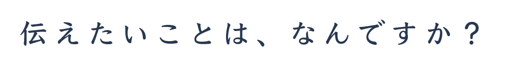

ホームページを訪れたユーザーがそのページをそのまま閲覧し続けたいと思うか、
他に移動するか判断する時間は、はじめの3秒で決まると言われています。
ページを訪れるユーザー目線で見た「見やすさ」「使いやすさ」を優先し、
シンプルでわかりやすいデザインを心がけています。
そして今の時代に必要不可欠なレスポンシブデザイン- PC、タブレット、スマートフォン…
異なる画面サイズに合わせサイズを調整する見やすいページ作りに対応します。